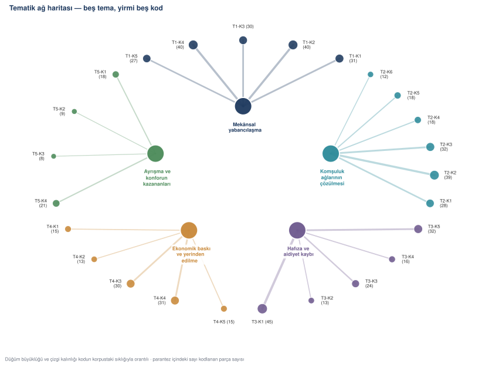
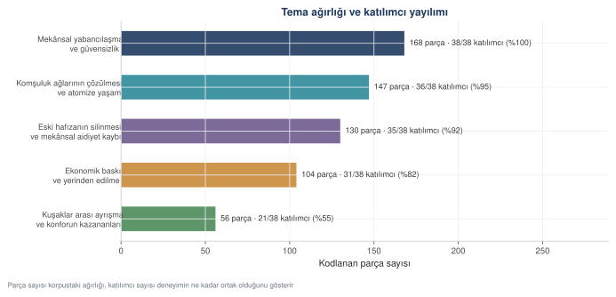
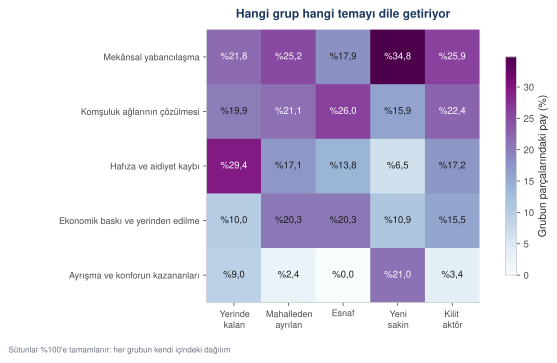
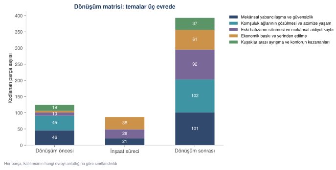
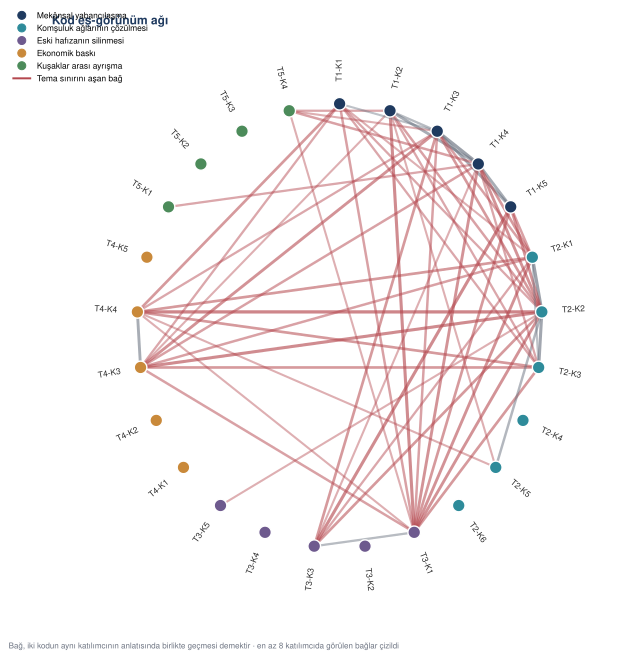
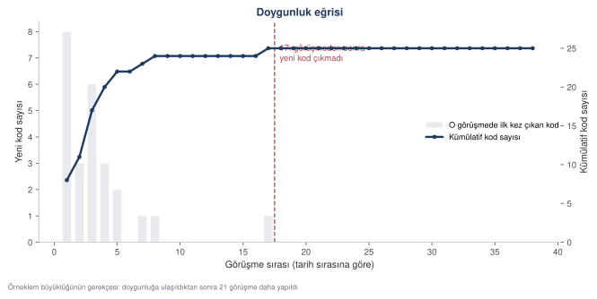

Örnek çalışma: etnografik saha araştırması
Kentsel dönüşümün mahalle kültürüne etkisi üzerine etnografik bir inceleme: 38 mülakat, 6 odak grup, 44 alan notu. MAXQDA ve NVivo'nun yaptığı işin tamamı açık kodla — kod kitabından tematik ağ haritasına, doygunluk eğrisinden makale metnine.
Bu bölüm, bir nitel saha araştırmasını tasarımdan makale metnine kadar izler. Önceki bölüm sayılarla çalışıyordu; bu bölüm sözle çalışıyor. Yöntem değişince yapay zekânın rolü de değişiyor: artık hesap yapmıyor, okuma ve kodlama işinin ölçeklenmesine yardım ediyor — ve kararı hâlâ araştırmacı veriyor.
Çalışmanın künyesi
Başlık. Kentsel dönüşümün mahalle kültürüne etkisi: Yıldıztepe örneğinde etnografik bir inceleme.
Amaç. Kentsel dönüşüm sürecinin, eski mahalle sakinlerinin sosyal sermayesini, komşuluk ilişkilerini ve mekânsal aidiyet duygusunu nasıl dönüştürdüğünü anlamak.
Yaklaşım. Yorumsamacı paradigma; etnografik saha çalışması. Amaç sayısal genelleme değil, deneyimin kendi bağlamında anlaşılmasıdır.
Araştırma adım adım
Saha seçimi ve erişim. Dönüşümün tamamlandığı, eski dokusu yıkılıp yerine üç etaplı bir site yapılmış bir mahalle seçildi. Erişim muhtarlık ve mahalle derneği üzerinden kuruldu. Saha çalışması 14 ay sürdü (Eylül 2025 – Ekim 2026).
Örnekleme. Kartopu (snowball) örnekleme. Üç kişiye doğrudan ulaşıldı; kalan 35 katılımcı yönlendirmeyle bulundu. Beş katılımcı grubu izlendi: yerinde kalan eski sakinler, mahalleden ayrılanlar, esnaf, yeni site sakinleri ve kilit aktörler (muhtar, dernek başkanı, okul müdürü, imam).
Veri toplama araçlarının hazırlanması. Standart soru listesi yerine, katılımcının kendi hikâyesini anlatmasını teşvik eden sekiz soruluk yarı yapılandırılmış form hazırlandı. Her soru bir evreye bağlandı: dönüşüm öncesi, inşaat süreci, dönüşüm sonrası.
Veri toplama. 38 derinlemesine mülakat (46–90 dakika, ses kaydı ve yazılı onamla), 6 odak grup oturumu (6–8 kişi), 44 alan notu ve 19 arşiv kaydı (gazete kupürü, dilekçe, fotoğraf künyesi).
Transkripsiyon ve kimliksizleştirme. Kayıtlar kelimesi kelimesine metne döküldü. Adlar K01–K38 kodlarıyla değiştirildi; sokak adları ve işyeri adları korundu, çünkü analizin konusu tam olarak bunların değişmesi.
Analiz. Braun ve Clarke'ın altı aşamalı tematik analizi, aykırı örnek incelemesi ve dönüşüm matrisi ile genişletildi.
- Lisans
- Kurs materyaliyle aynı — serbestçe kullanılabilir
- Boyut
- 38 mülakat · 6 odak grup · 44 alan notu · 19 arşiv kaydı · toplam 697 kodlama birimi
- Pakette
- kentsel_mulakatlar.txt · kentsel_mulakatlar.csv · kentsel_odak_gruplar.txt · kentsel_saha_notlari.csv · kentsel_arsiv.csv · kentsel_katilimcilar.csv · 25_kentsel_korpus_uret.py
Korpus iki biçimde duruyor: .txt dosyaları insan okuması için tam
döküm, .csv dosyaları ise kodlama birimi düzeyinde tablo. Kodlama
birimi, bir katılımcının tek bir soruya verdiği yanıtın anlamca
bütünlük taşıyan parçasıdır.
Ayrıca kentsel_referans_kodlar.csv var: her parçanın hangi koddan
üretildiğini gösterir. Gerçek sahada böyle bir dosya olmaz. Burada
var, çünkü kodlamanın ne kadarının doğru çıktığı ancak bir referansa
karşı ölçülebilir.
MAXQDA ve NVivo ne yapar, karşılığı nedir
Nitel analiz yazılımları üç iş yapar: metni saklar, kod atamasını kaydeder, sonucu tablolaştırır ve görselleştirir. Üçü de açık kodla yapılabilir; aradaki fark arayüz değil, kararların nerede durduğudur.
| Yazılımın yaptığı | Bu bölümdeki karşılığı |
|---|---|
| Metin havuzu ve belge yönetimi | kentsel_*.csv dosyaları |
| Kod ağacı (code system) | KOD_KITABI — betiğin içinde, görünür |
| Metin seçip kod atama | kodla() işlevi ve ÖRÜNTÜLER |
| Kod sıklığı tablosu | kentsel_kod_sikliklari.csv |
| Kod ilişki haritası (MAXMaps) | Şekil 16.1 ve 16.6 |
| Matris tarayıcı (Crosstab) | Şekil 16.3 ve 16.4 |
| Kodlayıcılar arası uyum | Cohen κ — Adım 8 |
| Kelime bulutu | Kasıtlı olarak yok; aşağıya bakınız |
Mülakat formunu kurmak
ROL Kent sosyolojisi alanında saha çalışması yürüten bir araştırmacısın. Etnografik görüşme tekniğine hâkimsin. GÖREV Aşağıdaki araştırma için yarı yapılandırılmış mülakat formu yaz. ARAŞTIRMA Amaç: kentsel dönüşümün mahalle kültürüne, komşuluk ağlarına ve mekânsal aidiyete etkisini anlamak. Katılımcılar: yerinde kalan eski sakinler, mahalleden ayrılanlar, esnaf, yeni site sakinleri, kilit aktörler. BİÇİM - En çok sekiz ana soru. - Her soru bir evreye bağlı olsun: dönüşüm öncesi / inşaat süreci / dönüşüm sonrası. Evreyi soru metninde değil, yanında parantezle belirt. - Sorular açık uçlu ve hikâye davet edici olsun; evet-hayır ile yanıtlanabilen soru yazma. - Yönlendirici sıfat kullanma: "ne kadar kötüleşti" değil "nasıl değişti". - Ayrıca dört sonda (probe) sorusu ekle. SINIR Katılımcıya ne hissetmesi gerektiğini ima eden hiçbir ifade kullanma. Dönüşümün olumlu okunabileceği bir soru da bulunsun.
1. [öncesi] Mahallede ne kadar zamandır yaşıyorsunuz? Buraya nasıl
geldiniz, biraz anlatır mısınız?
2. [öncesi] Dönüşümden önceki komşuluk ilişkilerinizi nasıl tarif
edersiniz?
3. [inşaat] Yıkım ve inşaat süreci sizin için nasıl geçti?
4. [inşaat] O dönemde nerede oturdunuz, günlük hayatınız nasıl
etkilendi?
5. [sonrası] Eski komşuluk ilişkileriniz ile bugünkü sitedeki yaşamı
nasıl kıyaslarsınız?
6. [sonrası] Bugün kendinizi bu mahallenin bir parçası olarak
hissediyor musunuz?
7. [sonrası] Dönüşümün size göre en iyi ve en kötü yanı ne oldu?
8. [sonrası] Eklemek istediğiniz bir şey var mı?
Sondalar: Bunu bir örnekle anlatabilir misiniz? · O sırada ne
hissettiniz? · Bu sizin için ne zaman değişti? · Başka kimler böyle
düşünüyor sizce?Yedinci sorunun "en iyi ve en kötü" diye kurulması tesadüf değil. Yalnız kaybı soran bir form yalnız kayıp bulur. Aykırı örnek incelemesinin (Adım 12) veriye girebilmesi bu soruya bağlı.
Kod kitabını çıkarmak
Kodlama, kodların nereden geldiği sorusuyla başlar. İki yol var: kuramdan türetmek (tümdengelim) ya da metinden çıkarmak (tümevarım). Bu çalışmada ikisi birlikte kullanıldı: ilk kodlar altmış parçalık bir okumadan çıkarıldı, sonra kuramsal literatürle karşılaştırıldı.
ROL Nitel araştırma yöntemleri konusunda deneyimli bir araştırmacısın. Braun ve Clarke'ın (2006) tematik analiz yaklaşımını izliyorsun. GÖREV Aşağıdaki mülakat parçalarını satır satır oku ve TÜMEVARIMSAL ilk kodları üret. Kuramdan kod getirme; yalnız metinde görünene ad ver. KURALLAR - Her kod en çok dört sözcük olsun. - Kod bir YORUM değil bir ETİKET olsun: "komşuluk özlemi" değil "kapı önü sohbetinin bitmesi". - Aynı anlama gelen iki kod üretme; benzer olanları birleştir. - Her kod için: kodun adı, bir cümlelik tanımı ve metinden iki ayırt edici ifade örneği ver. - Hiçbir parçaya zorla kod atama. Kodlanamayan parça varsa "KODLANMADI" de ve nedenini yaz. ÇIKTI BİÇİMİ Düz tablo: kod | tanım | ayırt edici ifadeler | kaç parçada göründüğü PARÇALAR [60 parça yapıştırıldı]
| kod | tanım | ayırt edici ifadeler |
|---|---|---|
| Kapıyı kilitleme alışkanlığı | Güvenlik algısının gündelik bir davranışta görünür hâli | "kilitlemezdik", "anahtarı saksının altına", "kepenk indiriyorum" |
| Komşunun adını bilmemek | Yüz yüze tanışıklığın kaybı | "adını bilmiyorum", "alt komşum", "isimlikten öğreniyorum" |
| Kapı önü sohbetinin bitmesi | Enformel karşılaşma mekânının yok olması | "kapı önünde çay", "merdivende laf", "tabure" |
| Yıkılan yer imleri | Hafızanın bağlı olduğu somut nesnelerin kaybı | "çeşme", "çınar", "fırının kokusu" |
| Aidat yükü | Mülkiyeti sürdürmenin maliyeti | "aidat dört bin", "ödeyemiyor", "icra" |
Yapay zekânın burada yaptığı iş öneridir. Üretilen 31 koddan
altısı birleştirildi, ikisi atıldı, biri ikiye ayrıldı. Kalan 25 kod
beş tema altında toplandı. Bu kararlar
kod/26_tematik_analiz_kentsel.py dosyasının başındaki KOD_KITABI
listesinde durur.



Kodlamayı koşturmak
def kodla(metin: str):
'''Bir parçaya kod atar; eşleşme yoksa None döner.
Karar kuralı: en çok örüntü eşleştiren kod kazanır. Eşitlik
durumunda kod kitabındaki sıra belirler — yani araştırmacının
önceliklendirmesi. Bu kural, 'hangi kodu neden verdiniz'
sorusunun yanıtıdır.
'''
kucuk = metin.lower()
puanlar = []
for kod, _tema, _tanim, oruntuler in KOD_KITABI:
p = sum(1 for o in oruntuler if o in kucuk)
if p:
puanlar.append((p, kod))
if not puanlar:
return None, 0
en_iyi = max(p for p, _ in puanlar)
for kod, _t, _a, _o in KOD_KITABI:
if (en_iyi, kod) in puanlar:
return kod, en_iyi
return None, 0Kodlanan parça : 605 / 697 (%86.8) Kodlanmayan parça: 92
Kodlanmayan 92 parça bir kusur değil, bir bulgudur. Üçte ikisi alan notlarından geliyor: gözlem notları çoğu zaman tek bir koda sığmayacak kadar betimleyicidir. Gerçek bir çalışmada bu parçalar elle okunur ve ya yeni bir kod doğar ya da "bağlam notu" olarak ayrılır.



Bulgular
Temalar ve ağırlıkları
| Tema | Parça | Pay | Katılımcı | Kod |
|---|---|---|---|---|
| Mekânsal yabancılaşma ve güvensizlik | 168 | %24,1 | 38/38 | 5 |
| Komşuluk ağlarının çözülmesi ve atomize yaşam | 147 | %21,1 | 36/38 | 6 |
| Eski hafızanın silinmesi ve aidiyet kaybı | 130 | %18,7 | 35/38 | 5 |
| Ekonomik baskı ve yerinden edilme | 104 | %14,9 | 31/38 | 5 |
| Kuşaklar arası ayrışma ve konforun kazananları | 56 | %8,0 | 21/38 | 4 |



Dönüşüm matrisi
| Tema | Öncesi | İnşaat | Sonrası |
|---|---|---|---|
| Mekânsal yabancılaşma ve güvensizlik | 46 | 21 | 101 |
| Komşuluk ağlarının çözülmesi | 45 | 0 | 102 |
| Hafıza ve aidiyet kaybı | 10 | 28 | 92 |
| Ekonomik baskı ve yerinden edilme | 5 | 38 | 61 |
| Konforun kazananları | 19 | 0 | 37 |
Matris, hangi temanın hangi evrede doğduğunu gösteriyor. Ekonomik baskı inşaat sürecinde ortaya çıkıyor ve sonrasında sürüyor; komşuluk anlatısı ise inşaat evresinde hiç görünmüyor — o dönemde zaten komşuluk diye bir şey kalmamış, insanlar dağılmış.



Kodlar arası bağlar



En güçlü dört bağ tema sınırını aşıyor:
| Bağ | Katılımcı | Ne anlama geliyor |
|---|---|---|
| Kapı önü sohbetinin bitmesi ↔ esnafın müşteri kaybı | 14 | Komşuluk ile esnaflık aynı mekâna bağlıymış |
| Güvenlik görevlisi ↔ yıkılan yer imleri | 13 | Güvenliğin gelişi ile hafızanın gidişi aynı anda anlatılıyor |
| Kapı önü sohbeti ↔ müteahhit pazarlığı | 13 | Kırgınlık pazarlık masasında başlamış |
| Sokağın yerini koridorun alması ↔ fotoğrafla hatırlama | 13 | Mekân kaybolunca hatırlama nesneye taşınıyor |
Birinci satır, bu çalışmanın en işe yarar bulgusu: kapı önü sohbeti ile bakkalın ayakta kalması aynı mekâna bağlıymış. İkisini ayrı ayrı sorsanız iki ayrı şikâyet duyarsınız; birlikte baktığınızda tek bir mekânsal çöküşün iki yüzü olduğu görünür.
Temsil edici alıntılar
"Alt komşumun adını bilmiyorum. Bir buçuk yıldır altımda oturuyor." — K07, 61, yerinde kalan eski sakin, mahallede 38 yıl [Komşunun adını bilmemek]
"Köşede bir çeşme vardı, üstünde 1974 yazardı. Yazın oradan su içerdik." — K12, 74, yerinde kalan eski sakin, mahallede 46 yıl [Yıkılan yer imleri]
"Burası artık benim mahallem değil. Evim burada ama mahallem değil. İkisi ayrı şey." — K05, 68, yerinde kalan eski sakin [Aidiyet kaybı]
"Siteye gelip çocuğumu görmek istediğimde güvenlikten izin almam gerekiyor. Doğduğum sokakta misafir oldum." — K19, 55, mahalleden ayrılan [Güvenlik görevlisi ve kartlı geçiş]
Aykırı örnekler
Baskın anlatı kayıp üzerine kurulu. Korpusun %5,6'sı bunun tersini söylüyor ve bu kısım atılmadı.
| Grup | Parça | Kişi | Ortalama yaş |
|---|---|---|---|
| Yeni site sakini | 22 | 7 | 35 |
| Yerinde kalan eski sakin | 12 | 9 | 59 |
| Mahalleden ayrılan | 3 | 3 | 59 |
| Kilit aktör | 2 | 2 | 64 |
"Oğlum memnun. 'Baba kombi yandı, otopark var, asansör var' diyor. Haklı da, ben de üşümüyorum artık." — K03 [Konfor memnuniyeti]
Aykırı örnekler yalnız yeni sakinlerden gelmiyor; yerinde kalan dokuz eski sakin de konfor kazancını dile getiriyor. Bu, bulguyu zayıflatmaz. Tersine, yorumun inceliği burada: kayıp ile kazanç aynı kişide birlikte bulunuyor. Aynı katılımcı hem "burası artık benim mahallem değil" diyor hem "asansör olmasaydı bu yaşta çıkamazdım" diyor. İkisini birden taşımayan bir analiz, sahayı değil araştırmacının beklentisini anlatır.
Örneklem ne kadar yeterli: doygunluk
Nitel araştırmada en sık sorulan hakem sorusu şudur: "38 kişi neye göre yeterli?" Yanıt sayı değil, doygunluk eğrisidir.



Bu eğri makalenin Yöntem bölümüne girer ve "veri doygunluğuna ulaşılmıştır" cümlesini iddia olmaktan çıkarıp ölçüme dönüştürür.
Kodlama ne kadar güvenilir
Üç ayrı denetim var ve üçü de farklı bir şeyi ölçüyor.
Bir — kodlayıcılar arası uyum
Korpusun %20'si ikinci bir kodlayıcı tarafından bağımsız kodlandı.
| Düzey | Gözlenen uyum | Şans eseri uyum | Cohen κ |
|---|---|---|---|
| Kod (25 seçenek) | %75,2 | %4,8 | 0,739 |
| Tema (5 seçenek) | %90,9 | %22,1 | 0,883 |
Landis ve Koch'un (1977) ölçeğinde kod düzeyi "önemli uyum", tema düzeyi "neredeyse tam uyum" aralığında. Yorum tema düzeyinde yapıldığı için raporlanacak asıl sayı 0,88'dir.
İki — referansla karşılaştırma
Korpus sentetik olduğu için her parçanın hangi koddan üretildiği bilinir. Otomatik kodlama kod düzeyinde %86,3, tema düzeyinde %88,3 isabet etti.
En sık karışan çiftler öğretici: "çocuklu ailelerde oyun alanı memnuniyeti" ile "yapı ölçeği" karışıyor, çünkü ikisi de balkondan aşağı bakmayı anlatıyor. Bu, kod kitabının bir zayıf noktasıdır ve gerçek bir çalışmada iki kodun tanımı keskinleştirilerek düzeltilir.
Üç — aykırı örnek araması
İlk ikisi tutarlılığı ölçer; üçüncüsü yanlılığı yakalar. Aykırı örnek aranmayan bir analiz, araştırmacının baştan beklediğini doğrulamaktan ibaret kalır. Adım 12 bunun için var.
Makaleyi yazmak
Yöntem bölümü
ROL
Kent sosyolojisi alanında yayın yapan bir akademisyensin. Nitel
yöntem bölümü yazıyorsun.
GÖREV
Aşağıdaki bilgilerden makalenin Yöntem bölümünü yaz.
BİLGİLER
Yaklaşım: yorumsamacı paradigma, etnografik saha çalışması, 14 ay.
Örnekleme: kartopu; 3 doğrudan erişim, 35 yönlendirme.
Katılımcılar: 38 kişi, beş grup [liste].
Veri: 38 mülakat (46–90 dk), 6 odak grup, 44 alan notu, 19 arşiv kaydı.
Analiz: Braun ve Clarke (2006) altı aşamalı tematik analiz.
Kodlama: tümevarımsal ilk kodlar + kuramsal karşılaştırma; 25 kod,
5 tema.
Güvenilirlik: ikinci kodlayıcı %20 örneklem, κ = 0,883 (tema düzeyi).
Doygunluk: son yeni kod 17. görüşmede.
Etik: yazılı onam, kimliksizleştirme, etik kurul onayı.
BİÇİM
- 450–550 sözcük, üç alt başlık: Araştırma deseni · Katılımcılar ve
veri toplama · Analiz ve güvenilirlik.
- Geçmiş zaman, edilgen değil etken çatı ("görüşmeler yapıldı" yerine
"38 görüşme yürüttüm" demeyin; "38 görüşme yürütüldü" deyin —
Türkçe akademik gelenekte edilgen yaygındır, buna uyun).
- Nitel araştırmanın genellenebilirlik iddiası taşımadığını BİR KEZ,
kendi yerinde belirt; tekrar etme.
SINIR
Hiçbir sayıyı yuvarlama ya da değiştirme. Verilmemiş bir bilgiyi
ekleme; eksik varsa [EKSİK: ...] yaz.Analiz ve güvenilirlik
Çözümlemede Braun ve Clarke'ın (2006) altı aşamalı tematik analiz yaklaşımı izlendi. Dökümler önce bütün olarak iki kez okundu; bu aşamada yorum yapılmadan not alındı. İkinci aşamada altmış parçalık bir alt küme üzerinden tümevarımsal ilk kodlar üretildi ve bu kodlar kent sosyolojisi yazınındaki mekânsal aidiyet ve sosyal sermaye tartışmalarıyla karşılaştırıldı. Birleştirme ve ayırma işlemlerinden sonra 25 koddan oluşan kod kitabı oluşturuldu; kodlar beş tema altında toplandı.
Kodlama güvenilirliği iki yoldan sınandı. Korpusun %20'lik bir örneklemi, kod kitabına hâkim ancak araştırmanın kuramsal çerçevesine dâhil olmayan ikinci bir kodlayıcı tarafından bağımsız olarak kodlandı. Kodlayıcılar arası uyum tema düzeyinde κ = 0,883, kod düzeyinde κ = 0,739 olarak hesaplandı; Landis ve Koch'un (1977) ölçütlerine göre her iki değer de kabul edilebilir aralıktadır. Ayrıca baskın anlatıyla çelişen ifadeler sistematik olarak arandı ve ayrı bir tema altında raporlandı.
Veri doygunluğu, görüşme sırasına göre ilk kez ortaya çıkan kod sayısının izlenmesiyle değerlendirildi. Son yeni kod on yedinci görüşmede üretildi; izleyen yirmi bir görüşme kod kitabına yeni bir giriş eklemedi. Bu bulgu örneklem büyüklüğünün yeterliliğine ilişkin ampirik bir dayanak sunmaktadır.
Bulgular bölümü
Nitel bulgu bölümü sayıdan değil alıntıdan kurulur, ama alıntı tek başına bulgu değildir. Üçlü yapı işe yarar: iddia → alıntı → çözümleme.
ROL Nitel araştırma makalesi yazan bir sosyologsun. GÖREV Aşağıdaki tema için Bulgular bölümünde yer alacak bir alt bölüm yaz. TEMA [tema adı] — [tema tanımı] Parça sayısı: [n], katılımcı sayısı: [k]/38 ALINTILAR [3–4 alıntı, katılımcı künyesiyle] BAĞLANTILI BULGU [eş-görünüm ya da matris bulgusu] BİÇİM Her paragraf üç adımda ilerlesin: 1. İddia — temanın ne söylediği, tek cümle. 2. Kanıt — alıntı, blok içinde, katılımcı künyesiyle. 3. Çözümleme — alıntının neyi gösterdiği; alıntıyı TEKRAR ETME, onu bir adım ileri taşı. SINIR - Alıntıyı yorumsuz bırakma; her alıntıdan sonra en az iki cümle çözümleme gelsin. - "Katılımcılar X olduğunu belirtmişlerdir" gibi boş özetleme cümlesi kurma. - Sayıyı abartma: 38 kişilik bir çalışmada "çoğunluk" diyebilirsin, "genel olarak toplumda" diyemezsin.
Komşuluk ağlarının çözülmesi
Dönüşüm sonrasında komşuluk, bir ilişki biçimi olmaktan çıkıp bir mekân sorununa dönüşmüştür: katılımcılar komşularını tanımamayı bir tercih olarak değil, karşılaşma imkânının ortadan kalkması olarak anlatmaktadır.
"Kapı önünde çay içerdik. Komşu geçer, oturur, yarım saat laflardık." (K22, 66, yerinde kalan eski sakin)
"Asansörde laf etmiyorsun, çünkü on beş saniye sürüyor. İnsan bir cümleye başlayamıyor." (K07, 61, yerinde kalan eski sakin)
İki ifade arasındaki fark bir yargı değişimi değil, bir süre değişimidir. Eski dokuda karşılaşma, kendiliğinden uzayan bir zamana yayılıyordu; yeni yapıda aynı karşılaşma on beş saniyeye sıkışmıştır. Katılımcıların "soğukluk" olarak adlandırdığı şey, bu bulguya göre bir tutum farkından çok mimari bir sonuçtur.
Bu okumayı destekleyen ikinci bir bulgu, kodların birlikte görünme örüntüsünden gelmektedir. Kapı önü sohbetinin bitmesi ile esnafın müşteri kaybı, on dört katılımcının anlatısında birlikte yer almaktadır. Komşuluk ilişkisi ile mahalle esnafının ayakta kalması aynı mekâna — sokak düzeyindeki karşılaşma alanına — bağlıdır; o alan ortadan kalktığında ikisi birlikte çözülmektedir.
Tartışma ve sınırlılıklar
ROL Kent sosyolojisi alanında yayın yapan bir akademisyensin. GÖREV Bulguları yazınla ilişkilendiren Tartışma bölümünü yaz. BULGULAR [beş tema, ağırlıkları ve en güçlü eş-görünüm bağları] BİÇİM - 600–700 sözcük. - Her bulgu için: yazındaki karşılığı · bu çalışmanın eklediği · çelişen bir bulgu varsa onu da yaz. - Aykırı örnekleri ayrı bir paragrafta ele al ve onları açıklamaya çalış, görmezden gelme. - Sınırlılıkları KENDİ bölümünde, bir kez, sade dille yaz. Özete, girişe ve sonuca dağıtma. SINIR - Nedensellik iddiası kurma: bu bir kesit çalışması değil, etnografik bir incelemedir; "yol açmıştır" yerine "birlikte görülmektedir". - Yazından atıf uydurma. Atıf gerekiyorsa [ATIF GEREKLİ: konu] yaz, boşluğu ben dolduracağım.
Sınırlılıklar
Çalışma tek bir mahallede yürütülmüştür ve bulgular bu sahanın koşullarına bağlıdır; nitel araştırmanın amacı istatistiksel genelleme olmadığından, aktarılabilirlik okurun kendi bağlamıyla kuracağı benzerliğe bağlıdır. Veri, dönüşüm tamamlandıktan sonra toplanmıştır; dönüşüm öncesine ilişkin anlatılar bugünden geriye bakışla kurulmuştur ve hatırlamanın kendisi bir yorum katmanı taşır. Mahalleden ayrılan sakinlere ulaşmak, yerinde kalanlara ulaşmaktan güç olmuştur; bu grubun sekiz kişiyle temsil edilmesi, yerinden edilme deneyiminin korpusta görece az yer tutmasına yol açmış olabilir.
Pakette ne var
| Dosya | İçerik |
|---|---|
| 25_kentsel_korpus_uret.py | Korpus üretimi; söz bankası ve referans kodlar burada |
| 26_tematik_analiz_kentsel.py | On iki adımlık tematik analiz; kod kitabı burada |
| 28_sekiller_kentsel.py | Altı şeklin tamamı |
| kentsel_mulakatlar.txt | 38 mülakatın tam dökümü |
| kentsel_mulakatlar.csv | Aynı dökümler, kodlama birimi düzeyinde |
| kentsel_odak_gruplar.txt | Altı odak grup dökümü |
| kentsel_odak_gruplar.csv | Odak grup parçaları |
| kentsel_saha_notlari.csv | 44 katılımcı gözlem notu |
| kentsel_arsiv.csv | 19 arşiv kaydı |
| kentsel_katilimcilar.csv | Katılımcı künyeleri ve kartopu zinciri |
| kentsel_mulakat_formu.txt | Yarı yapılandırılmış form |
| kentsel_referans_kodlar.csv | Referans kodlama — isabet ölçümü için |
| kentsel_kod_kitabi_referans.csv | Korpusu üreten kod kitabı |
| kentsel_tematik_analiz.txt | Analiz raporunun tamamı |
| kentsel_tematik_analiz.json | Aynı sonuçlar, makine okunabilir |
Ara tablolar: kod kitabı · kod atamaları · kod sıklıkları · tema sıklıkları · tema × grup · dönüşüm matrisi · doygunluk · eş-görünüm · karışan kodlar · alıntılar
Kendi çalışmanıza uyarlama
Kod kitabınızı yazın, sonra modele verin. Model kod üretsin diye değil, sizin kodunuzu tutarlı uygulasın diye. Tümevarımsal ilk geçişte model önerir, siz karar verirsiniz.
Her kodu bir örüntüye bağlayın. "Bu kodu neden verdiniz" sorusunun yanıtı yazılı olsun. Örüntüler mükemmel olmak zorunda değil; görünür olmak zorunda.
Kodlanmayanı atmayın. Hiçbir koda girmeyen parçalar kod kitabınızın eksik olduğu yerdir. En iyi yeni kodlar oradan çıkar.
Doygunluğu ölçün. Görüşme sırasına göre yeni kod sayısını tutmak beş satır kod alır ve Yöntem bölümünüzdeki en güçlü cümleyi üretir.
Aykırı örneği arayın. Baskın anlatıya uymayan parçaları ayrı bir dosyada toplayın. Bulamıyorsanız, aramadığınız içindir.
İkinci bir göz bulun. Kodlayıcılar arası uyum, nitel çalışmanın en kolay güçlendirilen yanıdır. Tek kodlayıcıyla çalışmak zorundaysanız kendi kodlamanızı iki hafta arayla tekrarlayın ve uyumu bildirin.
Akademide Üretken Yapay Zekâ — uygulamalı kurs. Hazırlayan: Dr. Mehmet Sevri, Recep Tayyip Erdoğan Üniversitesi. Bu sayfadaki bütün sayısal çıktılar, yanındaki kod ve veri dosyalarıyla yerel olarak üretilmiştir; hiçbiri elle yazılmamıştır.
Kullanılan gerçek veri setleri CC BY 4.0 ile dağıtılmaktadır ve kaynakları ilgili bölümde künyeleriyle verilmiştir. Sentetik veri kullanılan yerler açıkça işaretlenmiştir.
Buradaki istemler ve çıktılar öğretim malzemesidir. Yapay zekâ araçlarının kullanımından doğan hatalardan, uydurma kaynaklardan ve bunların yer aldığı çalışmalardan kurs ve hazırlayanı sorumlu tutulamaz; sorumluluk aracı kullanan araştırmacıya aittir. Sorumluluk ve etik beyanı · Dr. Mehmet Sevri — kişisel sayfa